The breeding bull is one of the most valuable animals on a farm — and penile injuries are one of the most common reasons a bull stops breeding. Trauma during mating, penile haematoma ("broken penis"), persistent frenulum and wounds can all end a bull's breeding career if they are not recognised and treated early.
This guide explains the anatomy of the bovine penis, the causes and signs of penile injuries, how they are diagnosed, the surgical treatments available, and the postoperative care and breeding prognosis after surgery.
Important: All surgical procedures must be performed by a qualified veterinarian under proper anaesthesia and aseptic conditions. Never attempt surgery on a bull yourself — incorrect technique causes suffering, infection and permanent breeding loss.
Anatomy of the Bovine Penis
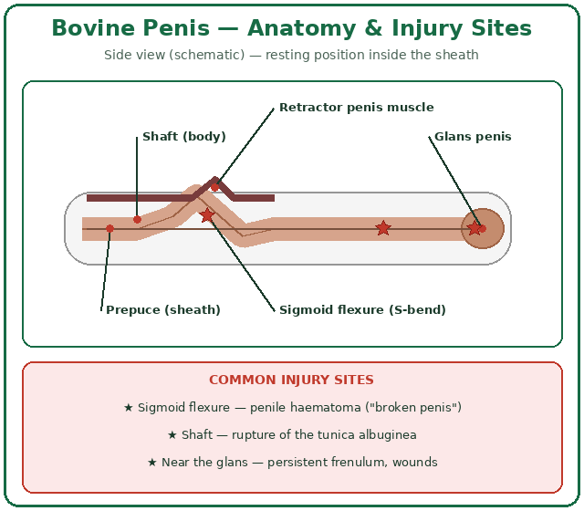
Bovine penis anatomy — and where injuries most often happen
The bull's penis is fibroelastic — it contains little erectile tissue and becomes rigid mainly by straightening, not by swelling. At rest it lies inside the prepuce (sheath) with an S-shaped bend, the sigmoid flexure, held in place by the retractor penis muscle. During erection the muscle relaxes, the flexure straightens and the penis extends from the sheath.
This anatomy explains the injury pattern: the sigmoid flexure is the weak point where the penis bends sharply if it misses the vulva during mating, and the glans and shaft are exposed to wounds once the penis is extended. The urethra runs inside the penis and can be damaged by the same trauma.
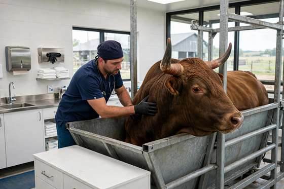
Examination starts with the restrained bull — safety first for vet and animal
Causes and Types of Penile Injuries
1
Trauma during mating(The erect penis strikes the cow's perineum or misses the vulva and bends sharply — the most common cause of serious injury)
2
Penile haematoma ("broken penis")(Blood collects under the skin at the sigmoid flexure after a vessel or the tunica albuginea ruptures — sheath swells and the bull refuses to mount)
3
Persistent frenulum(A band of tissue still joins the penis to the prepuce after puberty, preventing full extension — common in young bulls)
4
Wounds and lacerations(Barbed wire, thorns, bites or sharp objects cut the extended penis — wounds infect easily and scar badly)
5
Paraphimosis(The penis cannot retract into the sheath — it swells, dries and becomes infected if not treated quickly)
6
Tumours and chronic infection(Fibropapilloma (warts), balanoposthitis and abscesses of the penis and prepuce — slow to heal and often need surgery)
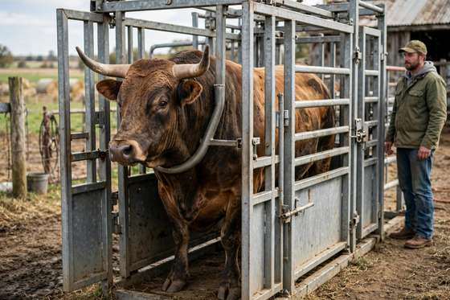
Safe restraint in a crush — essential before any examination
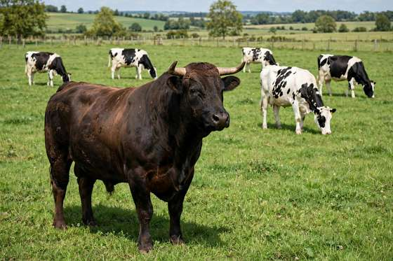
A sound bull at work — injuries usually happen during mating
Diagnosis of Penile Injuries
Accurate diagnosis decides the treatment — a small haematoma needs only rest, while a large one needs surgery. The bull must be properly restrained and usually sedated before examination.
1
Take the history(Breeding failure, swelling, pain, blood from the sheath — and when the problem first appeared)
2
Restrain and sedate the bull(Crush restraint and sedation as prescribed by a veterinarian — a bull in pain is dangerous)
3
Examine the sheath and penis(Palpate the sheath for swelling, heat and pain; check the preputial opening for discharge)
4
Extend the penis(Gently extend the penis by hand or after sedation to inspect the shaft, glans and frenulum)
5
Ultrasound examination(Shows the size and position of a haematoma and whether the tunica albuginea is ruptured)
6
Further tests in selected cases(Contrast radiography or endoscopy when the urethra may be damaged or the diagnosis is unclear)
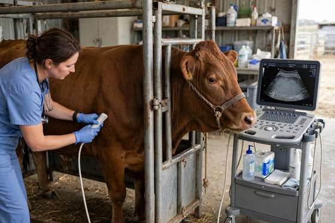
Ultrasound — maps a haematoma before deciding on surgery
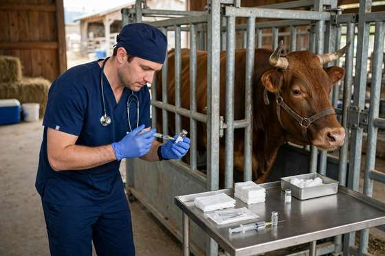
Sedation and local anaesthesia make examination safe and pain-free
Surgical Treatment Options
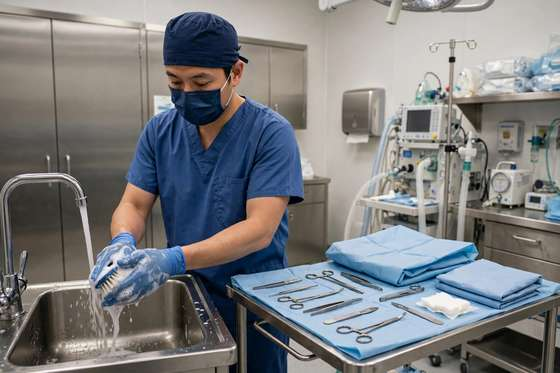
Aseptic preparation — sterile hands, drapes and instruments before every surgery
Treatment depends on the type and severity of the injury. The aim is always the same: relieve pain, repair the damage, and return the bull to breeding if possible.
1
Conservative rest first(Many small haematomas resolve with 2–3 months of sexual rest, cold therapy and anti-inflammatory treatment — no surgery needed)
2
Haematoma drainage and repair(Large haematomas are opened, the blood clot removed, bleeding vessels ligated and the tunica albuginea repaired with fine absorbable suture)
3
Frenulum transection(The persistent band is simply cut under sedation and local anaesthesia — a quick procedure with an excellent prognosis)
4
Wound repair(Wounds are cleaned, dead tissue removed (debridement) and the edges sutured — deep wounds may need a drain)
5
Partial penile amputation(Last resort for severe, irreparable damage — the bull can still urinate normally but cannot breed naturally)
6
Urethrostomy(A new opening for urine is made if the urethra is badly damaged or blocked — used when other repair is impossible)
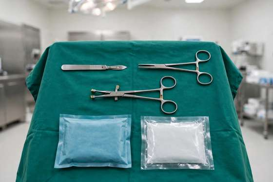
Fine instruments and absorbable suture for delicate penile repair
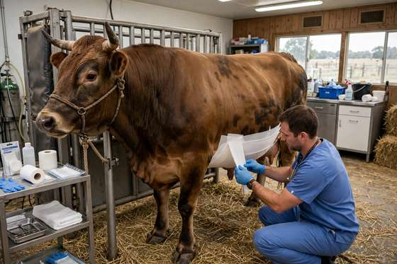
Supportive bandaging protects the repair after surgery
⚠ Treatment Tips:
Treat early — a haematoma operated on within days heals far better than one left for weeks.
Never let an injured bull keep mating — every attempt makes the damage worse.
Keep the penis clean and moist after surgery — dried tissue scars and sticks to the sheath.
Adhesions between the penis and prepuce are the most common cause of failed breeding after repair.
Postoperative Care and Breeding Prognosis
Recovery after penile surgery is slow — the penis must heal without tension, infection or adhesions. Patience during the rest period decides whether the bull breeds again.
1
Sexual rest — usually 60 to 90 days(Keep the bull completely away from cows in heat — erection and mounting tear the repair)
2
Supportive bandage or sling(Supports the prepuce, reduces swelling and protects the wound in the first days after surgery)
3
Antibiotics and pain relief as prescribed by a veterinarian(Complete the full course — infection and pain delay healing)
4
Daily wound checks(Look for swelling, discharge or the bandage slipping — clean dry bedding prevents contamination)
5
Gradual return to breeding(First test mating under supervision, with a calm cow — stop at once if the bull shows pain)
6
Breeding soundness examination(Full examination, including semen check, before the bull returns to the herd)
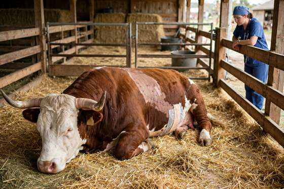
Quiet recovery in a clean pen — rest is the main treatment
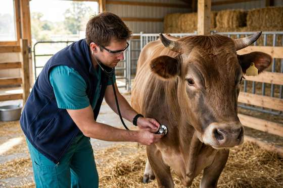
Follow-up checks track healing before breeding resumes
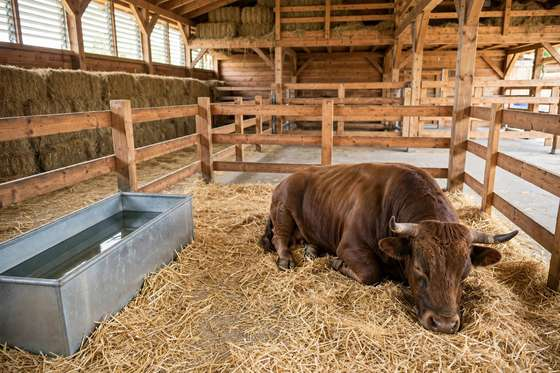
Clean, dry housing — essential for wound healing after surgery
Prognosis: Frenulum transection has an excellent prognosis — most young bulls breed normally within weeks. Early haematoma repair also gives good results, but delayed or severe cases often end with adhesions and a bull that cannot extend the penis. After partial amputation the bull can live comfortably and urinate normally, but natural breeding is no longer possible.
Prevention of Penile Injuries
Most penile injuries can be prevented by good breeding management and regular observation of the bull at work.
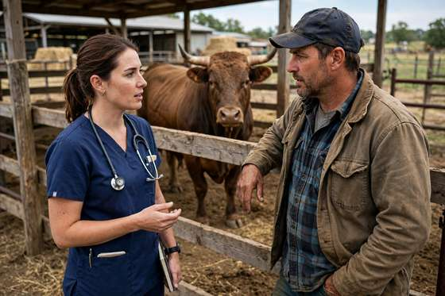
Regular veterinary advice keeps the breeding bull sound and working
⚠ Prevention Tips:
Use the correct bull-to-cow ratio — overworked bulls injure themselves more often.
Do not over-mate young, inexperienced bulls — introduce them to breeding gradually.
Watch the bull mating — a bull that mounts repeatedly without serving needs examination.
Keep mating areas free of barbed wire, thorns and sharp objects.
Carry out a breeding soundness examination before every breeding season.
Check young bulls for persistent frenulum before their first breeding season.
Frequently Asked Questions
What causes penile injuries in bulls?
Most penile injuries happen during mating, when the erect penis strikes the cow's perineum or misses the vulva and bends sharply. Other causes are wounds from barbed wire, thorns or bites, persistent frenulum in young bulls, and infections or tumours of the penis and prepuce.
What is a penile haematoma ("broken penis") in a bull?
A penile haematoma is a collection of blood under the skin, usually at the sigmoid flexure, after the erect penis bends sharply during mating and a blood vessel or the tunica albuginea ruptures. The sheath swells, the bull is in pain and refuses to mount. Small haematomas may resolve with sexual rest, but large ones need surgical drainage and repair.
What is a persistent frenulum and how is it treated?
A persistent frenulum is a band of tissue that still joins the penis to the prepuce after puberty, preventing full extension of the penis during mating. It is common in young bulls. Treatment is a simple surgical cut (transection) of the band under sedation and local anaesthesia, with an excellent prognosis.
How is a penile injury in a bull diagnosed?
Diagnosis starts with the history — breeding failure, swelling or pain — followed by examination of the restrained, sedated bull. The veterinarian palpates the sheath and penis, extends the penis to inspect it, and uses ultrasound to judge the size and position of a haematoma. Contrast radiography or endoscopy is used in selected cases.
What surgical options are available for penile injuries in cattle?
Options depend on the injury: surgical drainage and repair of a haematoma, transection of a persistent frenulum, debridement and suturing of wounds, and in severe irreparable cases partial penile amputation. A urethrostomy may be needed if the urethra is damaged. Many small injuries heal with sexual rest alone and need no surgery.
How do I know if my bull has a penis injury?
The usual signs are swelling of the sheath, pain when the bull tries to mount, blood from the sheath, a bull that mounts but cannot serve, or a penis that stays out and cannot go back in. Any of these signs means keep the bull away from cows and call your veterinarian quickly.
Can a bull breed again after penis surgery?
Many bulls return to normal breeding after surgery, especially after frenulum transection or early haematoma repair. The bull needs 60 to 90 days of sexual rest and a breeding soundness examination before returning to the herd. Bulls that had partial amputation cannot breed naturally but can still urinate normally.
سانڈھ کے عضو تناسل کی چوٹ کی کیا علامات ہیں اور اس کا علاج کیسے ہوتا ہے؟
سانڈھ کے عضو تناسل کی چوٹ کی علامات میں غلاف کی سوجن، ملاپ کے دوران درد، خون آنا، یا سانڈھ کا ملاپ نہ کر سکنا شامل ہیں۔ چھوٹی چوٹیں آرام سے ٹھیک ہو جاتی ہیں، لیکن بڑی چوٹوں میں سرجری کی ضرورت ہوتی ہے۔ سانڈھ کو گائیوں سے الگ رکھیں اور فوراً جانوروں کے ڈاکٹر سے رابطہ کریں۔
Key Takeaway
Penile injuries are a leading cause of breeding failure in bulls — but most are treatable when found early. Rest the bull at the first sign of trouble, get a proper veterinary diagnosis, and give the full 60–90 days of sexual rest after surgery. Prevention — correct bull-to-cow ratios, safe mating areas and a breeding soundness examination every season — keeps the bull working for years. Follow current local veterinary authority guidance for surgical and drug protocols.